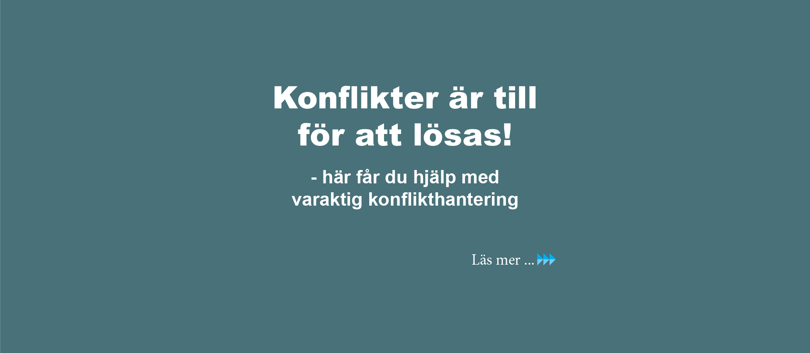

Kartläggning, analys och handfasta åtgärder
En stor del av välmåendet – för individen såväl som för organisationen – kommer ur en vardag utan energikrävande konflikter. När vi kan fokusera på uppdraget i stället för på interna spänningar frigörs kraft, kreativitet och resultat.
Konflikter uppstår i alla organisationer. Det är inte konflikten i sig som är problemet – det är hur den hanteras. En olöst konflikt kostar tid, energi och i förlängningen både hälsa och affärer. En välhanterad konflikt kan tvärtom stärka relationer och skapa klarhet.
Arbetet börjar alltid med en grundlig kartläggning av situationen. Vilka parter är inblandade? Vad är bakgrunden? Hur länge har konflikten pågått och vad har redan prövats? Utan en ärlig bild av utgångsläget är alla åtgärder skjutna i blindo.
Utifrån kartläggningen görs en analys av konfliktens kärna. Ofta handlar det om mer än det synliga – underliggande behov, missförstånd i kommunikationen eller strukturella faktorer i organisationen spelar regelmässigt in. DISC-beteendeprofil kan användas för att öka förståelsen för hur olika personlighetstyper bidrar till dynamiken.
Med analysen som grund genomförs ett strukturerat arbete med de inblandade parterna. Det kan ske individuellt, i par eller i grupp beroende på situationen. Målet är alltid konkreta, överenskomna förändringar – inte bara ett tillfälligt lugn.
Arbetet avslutas med tydliga, dokumenterade åtgärdsförslag som ger organisationen ett verktyg att följa upp och säkerställa att förändringen håller över tid.
Många konflikter har sin rot i bristande kommunikation – inte i faktiska intressemotsättningar. Genom empatisk kommunikation (NVC) skapas ett språk som gör det möjligt att uttrycka behov och känslor utan att eskalera spänningar.
Aktivt lyssnande är en central del av metoden. Den som verkligen lyssnar förstår mer, skapar tillit och har bättre förutsättningar att hitta lösningar som håller.

Ju tidigare man agerar, desto enklare är det att lösa. Hör av dig så tittar vi på situationen tillsammans.
Kontakta oss